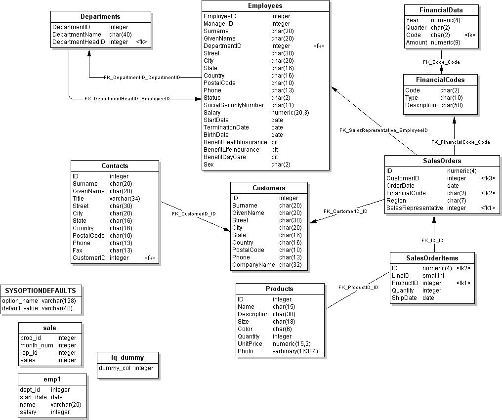
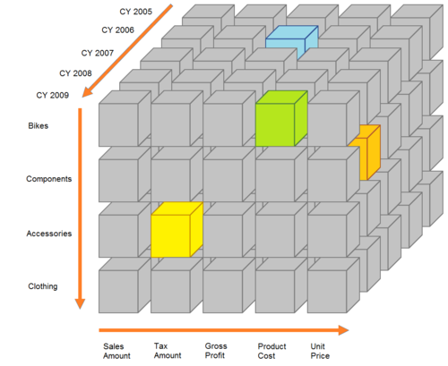
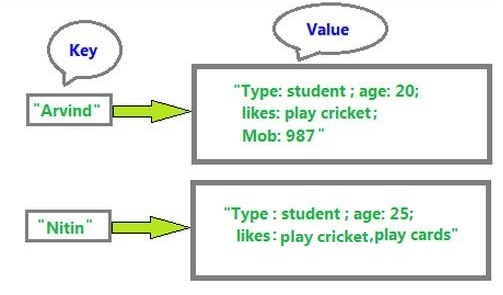
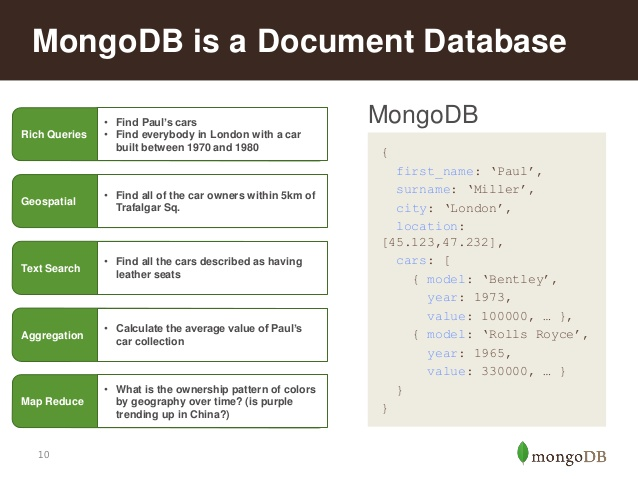

Data
“Data is a precious thing and will last longer than the systems themselves.” -- Tim Berners Lee
Bases de Datos Relacionales

Bases de Datos Analíticas

Bases de Datos de Llave Valor

Bases de Datos de Familias de Columnas

Bases de Datos basadas en Grafos

Bases de Datos Documentales

Tipos de Migraciones
- Storage Migration
- Database Migration
- Application Migration
- Buisness Management Migration
- Schema Migration
- Data Migration
Bases de Datos en Proyectos de Software
Bases de Datos Evolutivas